DPC.micro NS
compact programmable effects switcher
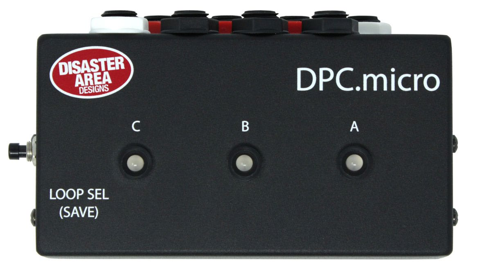
user manual
v1.00 11/11/2019
Introduction
The NS is the no-switch version: one LOOP SEL (SAVE) button on the side of the enclosure and three LEDs on the lid. Where the printed manual still talks about footswitches it has carried wording over from the footswitch version; those sentences are corrected here and every change is listed in copy-changes.md.
Thank you for your interest in the DPC.micro Programmable Effects Switcher.
The DPC.micro packs three true-bypass effects loops into a small footprint, adding in MIDI control and preset capability for good measure. Each loop may be individually controlled using the button on the DPC.micro or by MIDI remote control. You can also save your favorite effects loop settings to preset combinations for later recall.
Contents
- Introduction
- Ins and Outs
- Controlling Your Pedals
- Loop Selection
- Loop Selection Order
- Saving a Preset
- Configuration
- Configuration Menu
- Factory Reset
- MIDI Control
- Installing Firmware
- Before You Start
- Caution
- Do Not Use Drag and Drop
- Bootloader Mode
- Install the Firmware
- The First Time You Open It
- Fault Isolation
- Glossary
Ins and Outs
Most of the connections to the DPC.micro are located on the rear panel of the device as shown below.
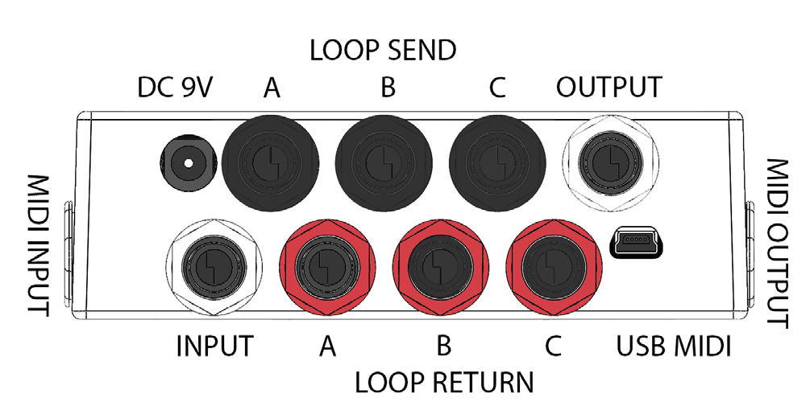
The white jacks on the rear panel serve as input and output connections. Plug your instrument into the white jack nearest to the power jack, and plug your amplifier into the white jack next to the USB port.
The remaining jacks connect to your pedals. The black jacks are the effects sends, which should connect to the input of each pedal. The red jacks are the returns, and connect to the output of each pedal.
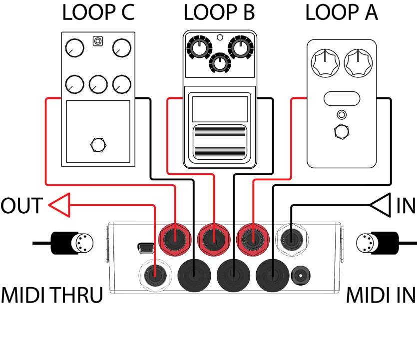
Connect your pedals as shown in the diagram above. Make sure to engage all of your pedals in the loops! The DPC.micro can bypass and engage them remotely only if the pedals are powered on and engaged.
The bypass state of each loop will be shown on the DPC.micro, but the LEDs on the looped pedals themselves will not change.
Controlling Your Pedals
The main control method for the DPC.micro NS is MIDI. Please consult the MIDI Control section below for full details.
In some cases you may wish to manually control the DPC.micro NS, for preset editing or overriding MIDI control. We have included a convenient button on the side of the unit for manual control.
Loop Selection
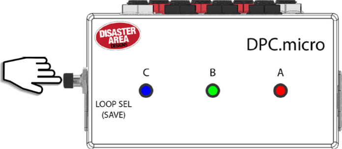
Tap the LOOP SEL switch to cycle through the eight different possible loop combinations.
The loop states are indicated by the LED for each loop.
Loop Selection Order
| C | B | A | Loops active |
|---|---|---|---|
| off | off | off | All off |
| off | off | red | A |
| off | green | off | B |
| off | green | red | A & B |
| blue | off | off | C |
| blue | off | red | A & C |
| blue | green | off | B & C |
| blue | green | red | A & B & C |
Saving a Preset
Hold the LOOP SEL / SAVE switch to save the current loop selection to the last received MIDI preset.
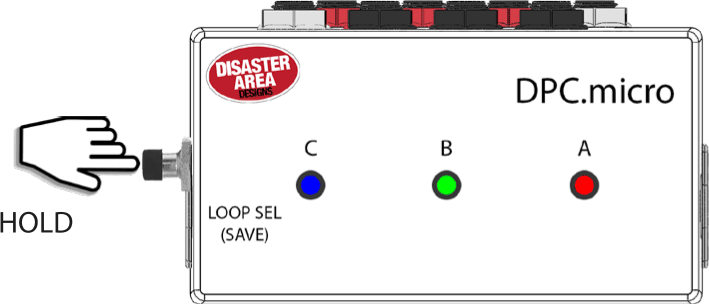
Configuration
To enter a configuration mode, power on the DPC.micro and then hold the LOOP SEL switch after the LEDs start flashing.
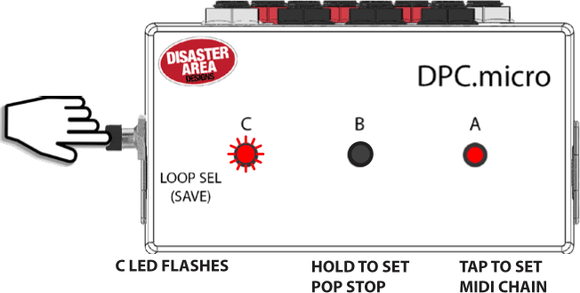
Configuration Menu
Tap the LOOP SEL switch to set the MIDI Chain ID. LED A will
indicate the current chain ID (red is default.)
RED = 0,
GREEN = 1,
BLUE = 2,
ORANGE = 3.
Hold the LOOP SEL switch to set the automatic pop reduction.
LED B will indicate the current reduction setting (off is
default.)
OFF = disable, RED = low,
GREEN = medium,
BLUE = high.
Send a MIDI program change message from your controller to set the DPC MIDI channel.
Factory Reset
Enter config mode, then hold down the LOOP SEL switch for 5 seconds to clear all preset data and configuration. The factory default settings are MIDI channel 16, Chain ID 0, Pop reduction OFF, RED / GREEN / BLUE LEDs, Brightness 4.
MIDI Control
There are three ways to control the DPC.micro using MIDI.
The simplest way is to send a program change ranging from 120 to 127. Each program change corresponds to a different unique loop setting, and will never change.
| PC | Loops active |
|---|---|
| 120 | No loops active |
| 121 | A active |
| 122 | B active |
| 123 | A & B active |
| 124 | C active |
| 125 | A & C active |
| 126 | B & C active |
| 127 | A & B & C active |
You can also save your own loop combinations to the internal memory of the DPC.micro, and load them using MIDI program changes 0–119.
Send a MIDI program change from your controller on the DPC.micro's MIDI channel. The DPC will load the contents of its memory. To edit, tap the LOOP SEL switch on the DPC.micro to change the loop assignments and then hold the LOOP SEL / SAVE switch. The DPC.micro will save the new data in the current memory location.
The final way to control the DPC.micro is to send MIDI CC messages. MIDI CC 50, 51, and 52 control the A, B, and C loops respectively. Send a value from 0–63 to turn the loop OFF, or a value from 64–127 to turn the loop ON.
If more than one DPC.micro is used in the same system, you can use the MIDI Chain ID function in the DPC setup to move the range of the MIDI CC values. This allows up to four DPC.micro to share the same MIDI channel and still have each loop be individually accessible from your MIDI controller.
| Chain ID | 0 (RED) | 1 (GRN) | 2 (BLU) | 3 (ORG) |
|---|---|---|---|---|
| Loop A CC | 50 | 53 | 56 | 59 |
| Loop B CC | 51 | 54 | 57 | 60 |
| Loop C CC | 52 | 55 | 58 | 61 |
Installing Firmware
This appendix is the maker's own How to Install Firmware in Your Pedal procedure, which covers every Disaster Area pedal. It is written in Simplified Technical English (ASD-STE100), so its voice differs from the manual above. The DPC.micro NS is the single button row of the bootloader table: the control you hold is the LOOP SEL (SAVE) button on the side.
This procedure tells you how to install new firmware in a Disaster Area pedal. It uses the DAD Firmware Updater application.
There are two versions of the application. They do the same task and they show the same screens.
| Your computer | What you download | What you get |
|---|---|---|
| Mac | DAD-Firmware-Updater.zip | DAD Firmware Updater.app |
| Windows PC | DAD-Firmware-Updater-Windows.zip | DAD Firmware Updater.exe. There is no installation. |
This procedure applies to both versions. When a step applies to one version only, the step starts with (Mac) or (Windows).
Written in Simplified Technical English (ASD-STE100).
1. Before you start
You need these items:
-
A computer:
- (Mac) A Mac with macOS 10.15.4 or a later version. The application operates on Intel Macs and on Apple Silicon Macs.
- (Windows) A PC with Windows 7 or a later version. The application operates on 32-bit Windows, on 64-bit Windows, and on ARM Windows.
- A USB cable that transmits data. Some cables supply power only. A power-only cable does not operate.
- The correct firmware file for your product. The file name ends with .bin.
- One pedal. Disconnect all other Disaster Area pedals from the computer.
Then prepare the application:
- (Mac) Open DAD-Firmware-Updater.zip. Move DAD Firmware Updater.app to your Applications folder.
- (Windows) Open DAD-Firmware-Updater-Windows.zip. Put DAD Firmware Updater.exe on your desktop. You do not install it. You do not need administrator permission.
If the firmware came in a .zip file, open the .zip file first and extract the .bin file. The application cannot read a .zip file.
2. Caution
The application cannot identify your pedal. All products transmit the same data on USB. Therefore, you must make sure that the firmware file is correct for your product. The file name is the only check that is available.
Incorrect firmware stops the pedal from operation.
Do not disconnect the pedal during the upload.
3. Do not use drag and drop
Do not copy the firmware file to the DISASTER disk. Use this application.
The DISASTER disk is not a usual disk. It is the memory of the pedal. The disk is full, and the file FLASH.BIN fills it completely. Thus your computer must erase FLASH.BIN before it can write your file, and then it selects a new position for your file. If the position is not correct, the pedal writes the firmware to the wrong address and the pedal does not start.
(Windows) Windows can also keep the data in memory after the copy shows as complete. If you disconnect the pedal at that moment, the memory of the pedal is only partially written. This is the cause of the condition in which drag and drop operates on some occasions and does not operate on other occasions.
The application writes into the file FLASH.BIN that is already on the pedal. It does not erase the file, it does not rename the file, and it does not change the size of the file. Therefore the data goes to the correct address. The application also tells the computer to write immediately. When the bar shows 100%, the data is in the pedal.
4. Put the pedal into bootloader mode
- Disconnect the pedal from USB.
- Find the control for your product in the table below.
- Hold the control.
- Connect the pedal to USB. Continue to hold the control.
- Release the control when the status line in the application shows Pedal connected and ready. (Mac) The DISASTER disk also shows on the desktop.
| Product | Control |
|---|---|
| MIDI Baby, micro.clock, DPC.micro NS | The single button |
| MIDI Baby 3, DMC-3XL | Center button |
| DMC.micro Pro, DMC.micro Classic, DPC.micro, qCONNECT | Left button |
| DMC-4, DMC-6 | Upper right button |
| DPC-5, DPC-8EZ | Far left button (MODE) |
| DMC-8 | SAVE button |
| Alexander Pedals — Neo, Leap and Venture Series | Bypass footswitch |
| micro.ghost | BOOT DIP switch, set to the BOOT position (set it to RUN after the update) |
The micro.ghost uses a switch. Do not hold the switch. Set the switch to the BOOT position before you connect the USB cable. The switch stays in the BOOT position during the upload. Step 14 in section 5 tells you when to set the switch to the RUN position.
If you do not know the control, click Which button does my pedal use? in the application. The same table shows.
(Windows) Windows can show a message about a new drive, or open a File Explorer window for the DISASTER drive. Close the window. Do not put a file into it.
5. Install the firmware
- Open the DAD Firmware Updater application.
- Do the procedure in section 4.
-
Read the status line. The status line must show
Pedal connected and ready with a green dot.
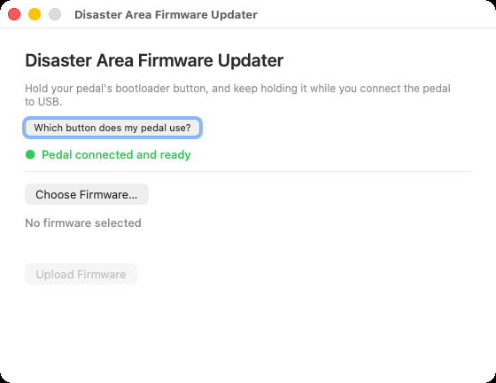
Figure 1 — The pedal is in bootloader mode. The dot is green. - Click Choose Firmware…. (Windows) As an alternative, drag the firmware file onto the window of the application.
- Select the firmware file. Then click Open.
- Read the file name and the size that the application shows.
-
Make sure that the file name agrees with your product. The
line Firmware size must show a size that is less than
the memory that is available.
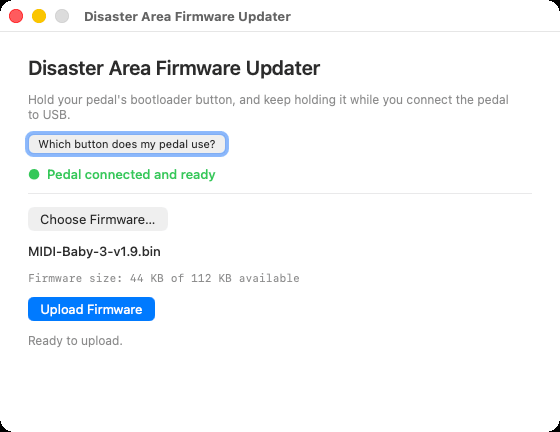
Figure 2 — The application shows the file name and the size. The size must be less than the memory that is available. - Click Upload Firmware.
-
Read the file name in the dialog again. This is your last
check before the application writes to the pedal.
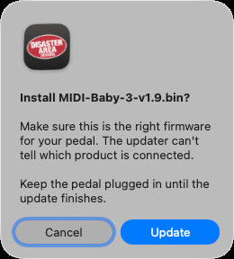
Figure 3 — The dialog shows the file name. - Click Update.
- Wait. The bar shows the progress of the upload. The status line shows Uploading — do not unplug the pedal….
-
Click OK when the message Upload complete
shows.
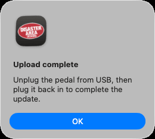
Figure 4 — The upload is complete. - Disconnect the pedal from USB.
- Set the BOOT DIP switch to the RUN position. This step applies to the micro.ghost only.
- Connect the pedal to USB again.
The pedal now operates with the new firmware.
The micro.ghost stays in bootloader mode while the switch is in the BOOT position. Therefore you must do step 14 before step 15.
The figures in this section show the Mac version. The Windows version shows the same status line, the same buttons and the same messages.
6. The first time you open the application
6.1 (Mac) Permit access to the pedal
macOS keeps removable disks safe. Thus the application must have your permission. The application asks for this permission one time.
Do these steps if the status line shows macOS is blocking access to your pedal:
- Click Open Settings in the message.
- Open Privacy & Security. Then open Files and Folders.
- Find DAD Firmware Updater in the list.
- Set Removable Volumes to on.
- Open the application again.
6.2 (Windows) The message "Windows protected your PC"
Windows can show the message Windows protected your PC. This message shows because the file is new, and not because the file has a fault.
- Click More info.
- Click Run anyway.
Windows does not show this message again for this file.
Your antivirus program can also examine the file when you open it the first time. Let the examination become complete. Then open the application again.
7. Fault isolation
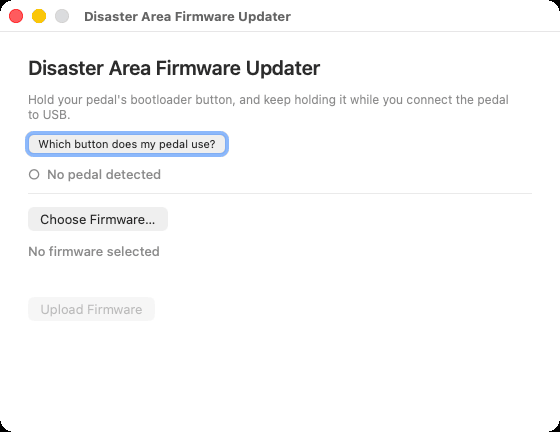
| Message | Version | Cause | Action |
|---|---|---|---|
| No pedal detected | Both | The pedal is not in bootloader mode. Or the cable supplies power only. | Do section 4 again. Use a cable that transmits data. |
| 2 pedals connected — please connect only one | Both | More than one pedal is connected. | Disconnect all pedals except one. |
| macOS is blocking access to your pedal | Mac | The application does not have permission. | Do section 6.1. |
| Windows is blocking access to your pedal | Windows | An antivirus program examines the drive. | Wait 10 seconds. If the message stays, disconnect the pedal and do section 4 again. |
| This file can't be used | Mac | The file is not firmware. Or the file is too large for the pedal. | Select the correct .bin file for your product. |
| This isn't a firmware file | Windows | The file is a .zip, a .hex, or a different type of file. | Open the .zip file and select the .bin file inside it. |
| This firmware is too big for the pedal you've connected | Windows | The firmware is for a different product. | Select the correct file for your product. |
| This file is too small to be firmware | Windows | The download did not become complete. | Download the firmware again. |
| Another program is using your pedal | Windows | A File Explorer window shows the DISASTER drive. | Close the window. Then click Upload Firmware again. |
| Windows won't let the updater write to your pedal | Windows | An antivirus program holds the drive. | Disconnect the pedal. Wait 5 seconds. Do section 4 and section 5 again. |
| A warning about a different product | Both | The pedal reports a different memory size than the firmware expects. | Stop. Make sure that the firmware is for this product. |
| Upload failed | Both | The pedal was disconnected. Or the computer stopped the write. | Disconnect the pedal. Do section 4 and section 5 again. |
| The DISASTER drive stays in File Explorer after the update | Windows | The application could not eject the drive. | This is not a fault. Disconnect the pedal. The drive goes away. |
| The micro.ghost shows as the DISASTER disk after the update | Both | The BOOT DIP switch stays in the BOOT position. | Disconnect the pedal. Set the switch to the RUN position. Connect the pedal again. |
The application examines the file before it writes. It refuses a file that is smaller than 1 KB, a file that is larger than the memory in the pedal, and a file that is not a program for this type of pedal.
If the pedal does not start after an update, do the procedure again. The bootloader stays in the pedal. Thus you can always install the firmware again.
8. Glossary
| Term | Meaning |
|---|---|
| Firmware | The program that operates in the pedal. |
| Bootloader mode | The condition in which the pedal shows as a disk and accepts new firmware. |
| DISASTER disk | The disk that shows on the desktop, or in File Explorer, when the pedal is in bootloader mode. |
| Upload | The transmission of the firmware file from the computer to the pedal. |
| .bin file | The firmware file. This is the only type of file that the pedal accepts. |